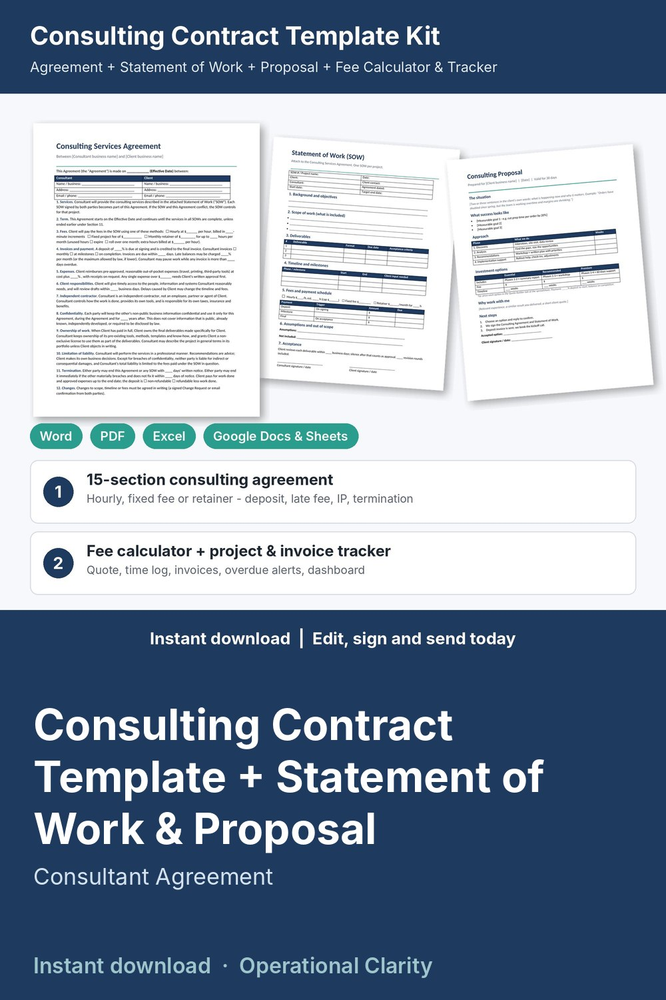

Consulting Contract Template + Statement of Work & Proposal

Win the project, sign it, track every hour and get paid: a complete consulting contract kit with a working fee calculator and invoice tracker, not just a Word file.
WHAT'S INSIDE
- Consulting Services Agreement (Word + PDF): 15 plain-English sections, 2 pages. Hourly, fixed fee or monthly retainer options, deposit, payment terms and late fee, expenses, client responsibilities, independent contractor, confidentiality, ownership of work, limitation of liability, termination, change requests, optional non-solicitation, governing law, signatures.
- Statement of Work (Word + PDF): objectives, scope, deliverables with acceptance criteria, milestones, fees and payment schedule, assumptions, out of scope, acceptance, signatures.
- Change Request Form: approve scope changes (hours, fee, dates) before you do extra work.
- Consulting Proposal (Word + PDF): situation, goals, phased approach and 3 pricing options (Essential / Recommended / Premium).
- Discovery Call & Client Intake Questionnaire (Word + PDF).
- Consulting Fee Calculator & Project Tracker (Excel / Google Sheets, 9 tabs):
* Rate Planner: your minimum hourly rate from income goal, expenses, taxes and billable hours
* Quote Builder: hours per phase, contingency, expenses, rounded fixed fee, effective hourly rate, deposit and a monthly retainer option
* Projects: hourly / fixed / retainer, hours vs budget with 80% and OVER BUDGET alerts, invoiced, paid, balance, earned per hour, unbilled work
* Time Log and Expenses (billable Y/N, markup)
* Invoices: due dates, days overdue, late fee, PAID / OPEN / PARTIAL / OVERDUE status
* Printable Invoice: pick a project and dates, billable hours by task and expenses fill in
* Dashboard: invoiced, collected, outstanding, overdue, utilization, month-by-month chart
- START HERE guide (PDF)
HOW IT WORKS
1. Set your rate in the Rate Planner.
2. Send the intake questionnaire, then price the job in the Quote Builder.
3. Send the proposal; when the client says yes, fill in the Agreement and Statement of Work and sign.
4. Log time and expenses, bill from the Invoice tab, and watch the Dashboard for overdue payments.
Example data (4 sample clients) shows how it all connects; delete it and type your own. Yellow cells = type here, green cells = calculated.
FORMATS
- Word .docx (edit in Microsoft Word, Google Docs, Pages or LibreOffice) + PDF, US Letter
- Excel .xlsx (works in Excel and Google Sheets)
This is an instant digital download, no physical item will be shipped.
Editable template, not legal advice. Laws differ by state and country; have it reviewed by a local attorney before you use it.